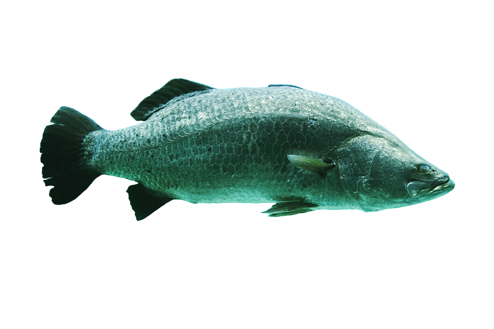

da Barras

€ 60
de barras vis ook wel een baars genoemt is een van de meest voorkomende inheemse zoetwaterroofvissen in Nederland en België.

de barras vis ook wel een baars genoemt is een van de meest voorkomende inheemse zoetwaterroofvissen in Nederland en België.